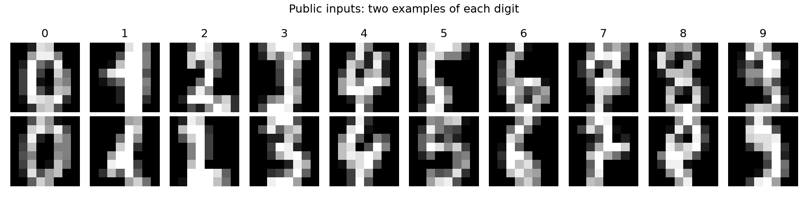
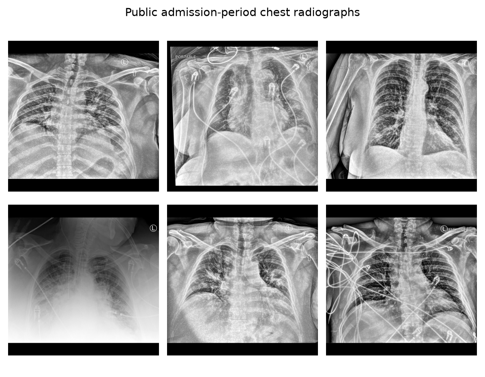
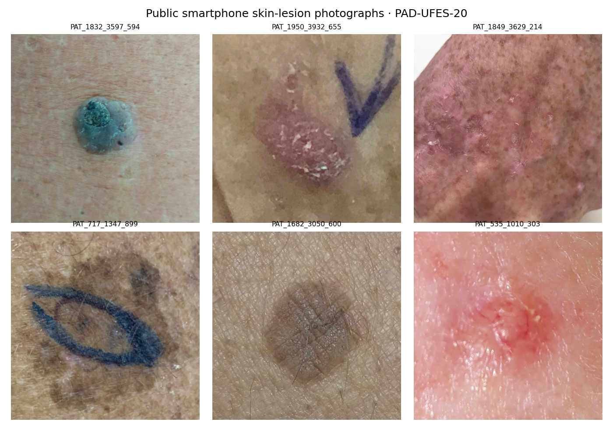

Explore the concept space.
Real DINOv3 embeddings, learned sparse concepts and held-out outcome comparisons. Click a concept to see its associations and two high-activation image examples.

Chest X-ray mortality
948 public patients; later in-hospital death and a clinical baseline.
Open interactive explorer ↗
Smartphone skin-lesion diagnosis
1,373 public patients; lesion diagnoses and eight clinical baseline fields.
Open interactive explorer ↗